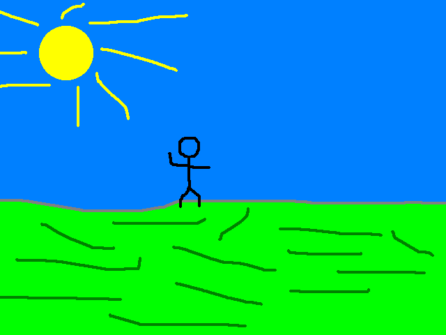
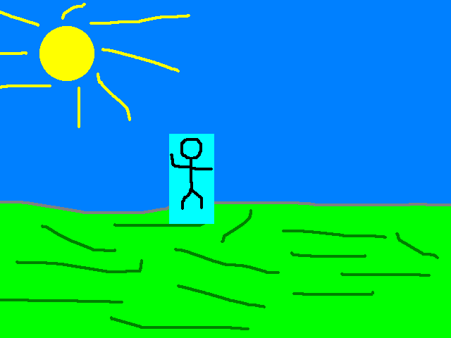
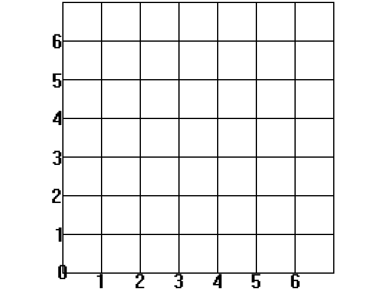
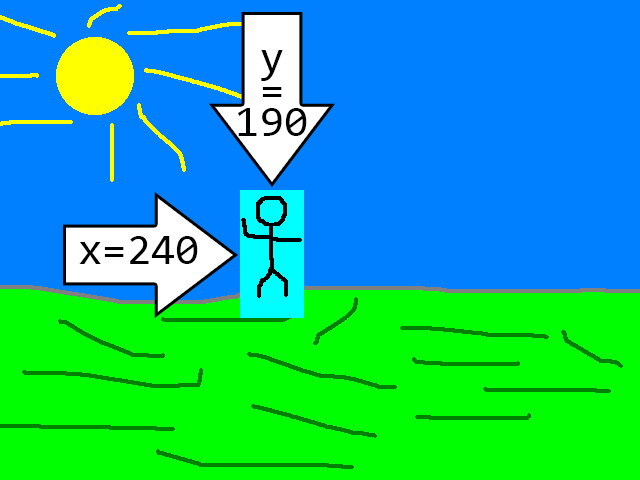

Color Keying

Last Updated: Jun 7th, 2025
In this tutorial we'll be giving our character texture a transparent background.
Say if we have a character image like this:
And we want to draw it onto a background like this:
But we want don't want the light blue color (known as cyan) to show up like this:
We can make cyan color transparent using color keying.
And we want to draw it onto a background like this:
But we want don't want the light blue color (known as cyan) to show up like this:

We can make cyan color transparent using color keying.
bool LTexture::loadFromFile( std::string path )
{
//Clean up texture if it already exists
destroy();
//Load surface
if( SDL_Surface* loadedSurface = IMG_Load( path.c_str() ); loadedSurface == nullptr )
{
SDL_Log( "Unable to load image %s! SDL_image error: %s\n", path.c_str(), SDL_GetError() );
}
else
{
//Color key image
if( SDL_SetSurfaceColorKey( loadedSurface, true, SDL_MapSurfaceRGB( loadedSurface, 0x00, 0xFF, 0xFF ) ) == false )
{
SDL_Log( "Unable to color key! SDL error: %s", SDL_GetError() );
}
else
{
//Create texture from surface
if( mTexture = SDL_CreateTextureFromSurface( gRenderer, loadedSurface ); mTexture == nullptr )
{
SDL_Log( "Unable to create texture from loaded pixels! SDL error: %s\n", SDL_GetError() );
}
else
{
//Get image dimensions
mWidth = loadedSurface->w;
mHeight = loadedSurface->h;
}
}
//Clean up loaded surface
SDL_DestroySurface( loadedSurface );
}
//Return success if texture loaded
return mTexture != nullptr;
}
All we have to do to color key a texture is to call SDL_SetSurfaceColorKey on the
SDL_Surface before creating the texture from it. Here we're setting all pixels that are red 0, green 0xFF, and blue 0xFF (which is how you get cyan)
to transparent. Otherwise, texture loading works the same.
bool loadMedia()
{
//File loading flag
bool success{ true };
//Load scene images
if( gFooTexture.loadFromFile( "04-color-keying/foo.png" ) == false )
{
SDL_Log( "Unable to load foo image!\n");
success = false;
}
if( gBgTexture.loadFromFile( "04-color-keying/background.png" ) == false )
{
SDL_Log( "Unable to load background image!\n");
success = false;
}
return success;
}
Here we're loading our scene textures which are doing the color keying under the hood.
//Fill the background white
SDL_SetRenderDrawColor( gRenderer, 0xFF, 0xFF, 0xFF, 0xFF );
SDL_RenderClear( gRenderer );
//Render images on screen
gBgTexture.render( 0.f, 0.f );
gFooTexture.render( 240.f, 190.f );
//Update screen
SDL_RenderPresent( gRenderer );
Here we draw the images on the screen.
If you have been messing around with drawing positions in SDL, you may be expecting something drawn at x=0, y=0 to be at the bottom left corner (or maybe even the center of the screen) because you expect it to use the Cartesian coordinate system like so:
SDL (and a lot of other 2D rendering APIs) use the top left as the origin and have the Y axis point downward:
So when we positon the Foo sprite, this is how the x and y coordinates work:
Having to deal with different coordinate systems is something you're going to have to get used to. In physics we usually use the right hand rule with Y axis pointing up, but game engines and 3D modelling programs can use different conventions for which axis is up/down/left/right/forward/backward.
If you have been messing around with drawing positions in SDL, you may be expecting something drawn at x=0, y=0 to be at the bottom left corner (or maybe even the center of the screen) because you expect it to use the Cartesian coordinate system like so:

SDL (and a lot of other 2D rendering APIs) use the top left as the origin and have the Y axis point downward:
So when we positon the Foo sprite, this is how the x and y coordinates work:

Having to deal with different coordinate systems is something you're going to have to get used to. In physics we usually use the right hand rule with Y axis pointing up, but game engines and 3D modelling programs can use different conventions for which axis is up/down/left/right/forward/backward.
Addendum: Asset managers
So far in these tutorials we have been manually loading and unloading our textures and keeping track of when we need them. In most game engines, they use some sort of asset manager because you can only imagine how many textures, models, sounds, etc are loaded in a real video game and having to take keep
track of them manually would be unfeasible.
The way asset managers would work at a basic level is when something (like a scene or game state) needs an asset like a texture, it would load it. If something else also needs it, the asset manager would check if it's already loaded and if it is instead of loading it again it would keep track of everything that's using it. Once nothing is using the asset anymore they would delete it or mark it for deletion so the user can delete it at a specified time.
If you're making an engine for a platformer with data driven level loading it would be a good idea to implement a level manager. However, for something like a nasty tetris project, an asset manager would be overkill. Again, a game engine should be as simple as possible.
The way asset managers would work at a basic level is when something (like a scene or game state) needs an asset like a texture, it would load it. If something else also needs it, the asset manager would check if it's already loaded and if it is instead of loading it again it would keep track of everything that's using it. Once nothing is using the asset anymore they would delete it or mark it for deletion so the user can delete it at a specified time.
If you're making an engine for a platformer with data driven level loading it would be a good idea to implement a level manager. However, for something like a nasty tetris project, an asset manager would be overkill. Again, a game engine should be as simple as possible.